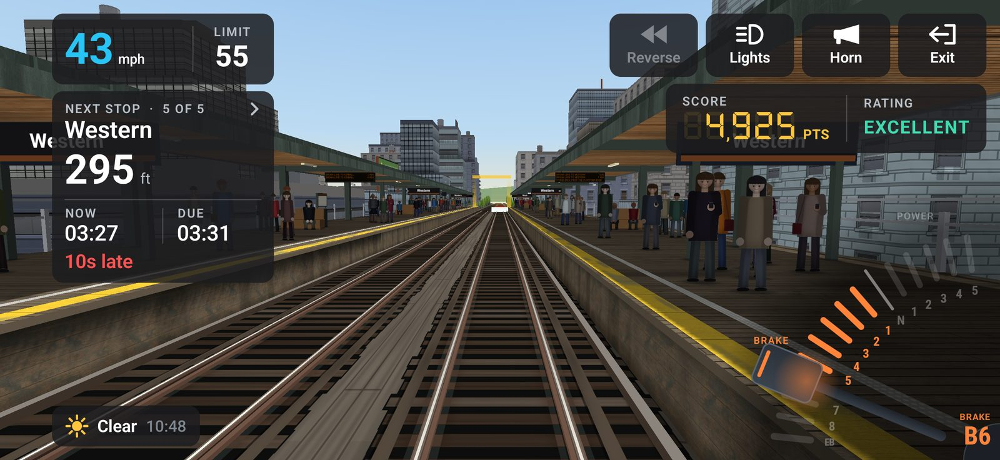

In Local Line you drive one train down one line, station to station. At every stop you are graded on two things: where you stopped and when you got there. Do both well, stop after stop, and the points multiply.
01Your first run
- On the title screen, tap DEPART. You start in the cab at the first station, doors closed.
- Push the master controller (the dial in the bottom right) up into P to pull away.
- Watch the limit and stay under it. Ease back to N to coast.
- As the next station comes up, pull the dial down into B and brake so the train stops at the stop mark.
- The doors open, passengers board, the doors close. Power up promptly and go again.
The run ends at the last station. You get a grade for the whole run and a card for every stop.
02The cab

1 2 3 4 5 6- 1Your speed and the line's speed limit.
- 2The next stop: its name, the distance to it, the run clock (NOW), when you are due (DUE), and whether you are early or late. Tap it to see the stops after.
- 3Reverse Lights Horn Exit
- 4Your score and the rating so far.
- 5The master controller.
- 6The weather and the time of day.
Tap anywhere on the open scene to change the camera: cab, chase cam, roof, rail, window and, on some trains, more. The driving does not stop while you look around.
03The master controller

One handle does power and braking, as on a real electric train. Drag it up or down; it clicks into notches.
- P1 to P5: power. Higher notches pull harder.
- N: neutral. The train coasts.
- B1 to B8: the service brake, light to firm.
- EB: the emergency brake, at the very bottom. It stops you hardest and fastest. Save it for when you have misjudged.
04Speed limits and ATC
The LIMIT next to your speed is the limit where you are now. When a lower limit is coming up, a pill under your speed shows it and how far away it starts. It turns amber when it is time to brake for it.
Go over the limit and the speed card shows Overspeed, and points drain away until you are back under it.
Some lines are fitted with ATC (automatic train control). It rings a warning if you are going too fast for a limit ahead. Ignore it and it puts the brakes on for you, and the intervention costs 200 points at the next stop. To get the brakes back, slow down and move the handle to N. You can switch ATC off in SETTINGS, but it is there to help you.
05Stopping on the mark

Each platform has a stop mark: a lit gate over the line with coloured bands on the track. Stop with your cab at the mark.
As you get close, the next stop card shows how far you are from it, and whether you would be Short or Over.
| Stop | How close | Points |
|---|---|---|
| BULLSEYE | within 10 cm | 500 + 300 |
| PINPOINT | within 30 cm | 500 + 150 |
| PERFECT | within 1 m | 500 |
| GOOD | at the platform | 300 |
Stop too far from the platform and the doors stay shut: the card says Not at platform. Creep up, or if you overshot, tap Reverse while stopped and back up to the mark. The clock keeps running while you shunt.
06The timetable

Every station has a time you are DUE. The NOW clock starts when the train first moves. The card tells you if you are on time, early or late.
Arriving is graded too: within 3 seconds of the timetable is PERFECT (500), within 10 seconds is GOOD (300), within 20 seconds is OKAY (100). Early counts the same as late, so do not race.
07Doors and departures
Stop at the platform and the doors open by themselves. They close after the dwell; you can tap the stop card to close them sooner.
Your departure is graded at the next stop: power up within 2 seconds of the doors closing for +100, within 5 seconds for +50.
A penalty for ATC or for the doors can sometimes be waived by watching an ad, when the game offers it.
08Scoring and grades
A stop can earn up to 1,000 points: 500 for where you stopped and 500 for when, plus any BULLSEYE or PINPOINT bonus and your departure.
Streaks: PERFECT on both the stop and the time, with no ATC, starts a streak. Each stop in a row multiplies the next by another quarter, up to double.
At the end of the run you get a grade for the whole run, out of the points on offer:
| Grade | Rating | Points on offer |
|---|---|---|
| S | EXCELLENT | 90% and up |
| A | GREAT | 75% and up |
| B | GOOD | 55% and up |
| C | FAIR | 35% and up |
| D | POOR | below 35% |
Run into the buffers at the end of the line, or take a crossover too fast, and the train derails. That ends the run.
09Lines, trains and the daily run
- ROUTES lists every line: short commutes, express lines and long endurance runs. Locked lines open when you earn the mastery grade on the line before it (your best grade over your last five full runs), or can be bought.
- TRAIN picks the train for the line. Each drives and sounds its own way.
- DAILY is one run a day on each line, with the weather, time of day and a slightly tighter or looser timetable set for that day. Play it every day to keep a streak going.
- LOGBOOK keeps every run you have driven. RANKS and WORLD show the leaderboards.
- The camera tile in the cab opens photo mode.
10Tips
- Brake in two steps. A firm notch first to bleed off speed, then ease back to a light notch for the last few metres so you can place the train.
- Watch the distance, not the platform. The next stop card counts down to the mark. Your eye will lie to you from the cab.
- Coast. Hitting the limit and then coasting in N is often right on the timetable, and leaves you less to brake off.
- Read the limit pill. When it goes amber, start braking for the lower limit ahead, or ATC will do it for you.
- A late stop on the mark beats a fast stop past it. Points for position are as many as points for time, and an overshoot can cost you both.
- Learn a line. The limits, stations and timetable are the same every time you drive a line (the daily tweaks the timetable). Remember where the limits drop and where you start braking.